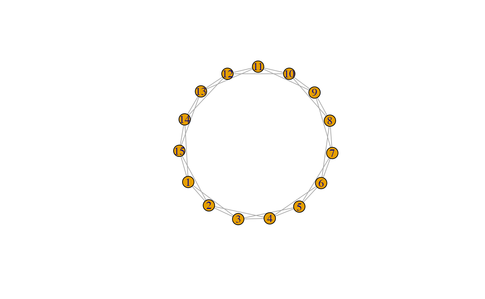

These functions allow measurement of various features of a diffusion process at the network level:
net_transmissibility() measures the average transmissibility observed
in a diffusion simulation, or the number of new infections over
the number of susceptible nodes.
net_recovery() measures the average number of time steps
nodes remain infected once they become infected.
net_reproduction() measures the observed reproductive number
in a diffusion simulation as the network's transmissibility over
the network's average infection length.
net_immunity() measures the proportion of nodes that would need
to be protected through vaccination, isolation, or recovery for herd immunity to be reached.
net_transmissibility(.data)
net_recovery(.data, censor = TRUE)
net_reproduction(.data)
net_immunity(.data, normalized = TRUE)Network data with nodal changes,
as created by play_diffusion(),
or a valid network diffusion model,
as created by as_diffusion().
Where some nodes have not yet recovered by the end of the simulation, right censored values can be replaced by the number of steps. By default TRUE. Note that this will likely still underestimate recovery.
Logical scalar, whether the centrality scores are normalized. Different denominators are used depending on whether the object is one-mode or two-mode, the type of centrality, and other arguments.
net_transmissibility() measures how many directly susceptible nodes
each infected node will infect in each time period, on average.
That is:
$$T = \frac{1}{n}\sum_{j=1}^n \frac{i_{j}}{s_{j}}$$
where \(i\) is the number of new infections in each time period, \(j \in n\),
and \(s\) is the number of nodes that could have been infected in that time period
(note that \(s \neq S\), or
the number of nodes that are susceptible in the population).
\(T\) can be interpreted as the proportion of susceptible nodes that are
infected at each time period.
net_recovery() measures the average number of time steps that
nodes in a network remain infected.
Note that in a diffusion model without recovery, average infection length
will be infinite.
This will also be the case where there is right censoring.
The longer nodes remain infected, the longer they can infect others.
net_reproduction() measures a given diffusion's reproductive number.
Here it is calculated as:
$$R = \min\left(\frac{T}{1/L}, \bar{k}\right)$$
where \(T\) is the observed transmissibility in a diffusion
and \(L\) is the observed recovery length in a diffusion.
Since \(L\) can be infinite where there is no recovery
or there is right censoring,
and since network structure places an upper limit on how many
nodes each node may further infect (their degree),
this function returns the minimum of \(R_0\)
and the network's average degree.
Interpretation of the reproduction number is oriented around R = 1. Where \(R > 1\), the 'disease' will 'infect' more and more nodes in the network. Where \(R < 1\), the 'disease' will not sustain itself and eventually die out. Where \(R = 1\), the 'disease' will continue as endemic, if conditions allow.
net_immunity() estimates the proportion of a network
that need to be protected from infection for herd immunity
to be achieved.
This is known as the Herd Immunity Threshold or HIT:
$$1 - \frac{1}{R}$$
where \(R\) is the reproduction number from net_reproduction().
The HIT indicates the threshold at which
the reduction of susceptible members of the network means
that infections will no longer keep increasing.
Note that there may still be more infections after this threshold has been reached,
but there should be fewer and fewer.
These excess infections are called the overshoot.
This function does not take into account the structure
of the network, instead using the average degree.
Interpretation is quite straightforward. A HIT or immunity score of 0.75 would mean that 75% of the nodes in the network would need to be vaccinated or otherwise protected to achieve herd immunity. To identify how many nodes this would be, multiply this proportion with the number of nodes in the network.
Kermack, William O., and Anderson Gray McKendrick. 1927. "A contribution to the mathematical theory of epidemics". Proc. R. Soc. London A 115: 700-721. doi:10.1098/rspa.1927.0118
Diekmann, Odo, Hans J.A.P. Heesterbeek, and Hans J.A.J. Metz. 1990. "On the definition and the computation of the basic reproduction ratio R0 in models for infectious diseases in heterogeneous populations". Journal of Mathematical Biology, 28(4): 365–82. doi:10.1007/BF00178324
Kenah, Eben, and James M. Robins. 2007. "Second look at the spread of epidemics on networks". Physical Review E, 76(3 Pt 2): 036113. doi:10.1103/PhysRevE.76.036113
Garnett, G.P. 2005. "Role of herd immunity in determining the effect of vaccines against sexually transmitted disease". The Journal of Infectious Diseases, 191(1): S97-106. doi:10.1086/425271
Other measures:
measure_attributes,
measure_central_between,
measure_central_close,
measure_central_degree,
measure_central_eigen,
measure_closure,
measure_cohesion,
measure_diffusion_infection,
measure_diffusion_node,
measure_features,
measure_heterogeneity,
measure_hierarchy,
measure_holes,
measure_periods,
measure_properties,
member_diffusion
Other diffusion:
make_play,
measure_diffusion_infection,
measure_diffusion_node,
member_diffusion
smeg <- generate_smallworld(15, 0.025)
smeg_diff <- play_diffusion(smeg, recovery = 0.2)
plot(smeg_diff)

# To calculate the average transmissibility for a given diffusion model
net_transmissibility(smeg_diff)
#> [1] 2.2
# To calculate the average infection length for a given diffusion model
net_recovery(smeg_diff)
#> [1] 5
# To calculate the reproduction number for a given diffusion model
net_reproduction(smeg_diff)
#> [1] 4
# Calculating the proportion required to achieve herd immunity
net_immunity(smeg_diff)
#> [1] 0.75
# To find the number of nodes to be vaccinated
net_immunity(smeg_diff, normalized = FALSE)
#> [1] 12